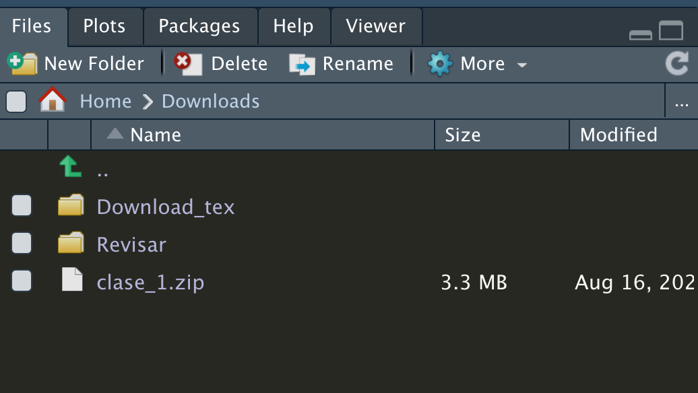
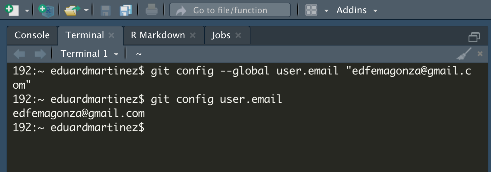
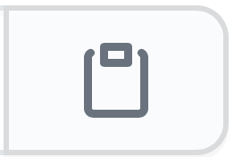
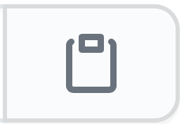
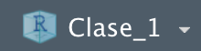

Tres caminos para clonar/descargar un repositorio de GitHub
Para replicar las clases del curso “Taller de R: Estadística y programación” (ver repositorio del curso en GitHub aquí) o cualquier otro repositorio libre en GitHub, usted puede seguir cualquiera de estos tres caminos. Sin embargo, en cualquiera de los tres casos, es necesario que usted se registre y cree una cuenta en GitHub previamente.
- Descargar el respositorio manualmente.
La forma más sencilla de descargar un repositorio de GitHub para replicar la clase es descargar manualmente la carperta completa del repositorio. Para ello, usted debe ir al repositorio y hacer clic en  y después hacer clic en
y después hacer clic en  .
.
Al hacer esto usted obtiene un archivo de extención .zip que debe descomprimir. Desde este momento usted puede usar todos los archivos del repositorio. Para propositos de la clase, es importante que usted lea los archivos README.html y el otro archivo .html que está en la carpeta help.
- Usando la URL del repositorio.
Podemos descargar el repositorio usando la URL del archivo .zip. Para ello, primero vamos a ir a la consola de Rstudio y generamos un script y pegamos directorio de trabajo en el que deseamos descargar la carpeta.

Y copiamos el código que se genera en la consola setwd("~/Downloads") y lo pegamos en el script.
# By: Eduard Martinez
# Date: 16-08-2020
# Vamos a establecer el directorio de trabajo
setwd("~/Downloads")
Ahora vamos al repositorio en GitHub y hacemos clic en  y después hacemos clic derecho sobre
y después hacemos clic derecho sobre  para que se despliegue el siguiente menu:
para que se despliegue el siguiente menu:

Ahora, debe hacer clic sobre . Esto copiará la URL que contiene el archivo .zip del repositorio. Ahora vamos a usar la función download.file del paquete utils (este paquete viene por default en la instalación de R, así que no deberia tener problemas). Hacemos paste de la URL en el argumento url y en el argumento destfile escribimos el nombre que le queremos asignar a nuestra carpeta.
# Descargar el repositorio
download.file(url = "https://github.com/taller-R/Clase_1/archive/master.zip",
destfile = "clase_1.zip")Ahora debemos tener en un nuestro directorio de trabajo, un archivo llamdo “clase_1.zip” en formato .zip son el contenido del repositorio.

Ahora vamos a descomprimir este archivo, para ello vamos a usar la función unzip del paquete utils.
Ahora debemos tener en un nuestro directorio de trabajo, una carpeta llamda “clase_1-master” con el contenido del repositorio.

Fijamos nuestro nuevo directorio de trabajo hasta la carpeta que descomprimimos setwd("~/Downloads/clase_1-master") e inspeccionamos los archivos que contiene list.files()
# Cambiar el directorio de trabajo
setwd("~/Downloads/clase_1-master")
# Inspeccionar archivos en el directorio
list.files()## [1] "Clase 1.Rproj" "codes" "data" "help"
## [5] "README.html" "README.md" "task"Listo ya puedes ir a la carpeta codes y a la carpeta help para que abras el archivo Clase 1.R y el archivo Clase 1.html. A replicar la clase!.
- Crear un proyecto de versión de control.
Otra forma de replicar un repositorio en GitHub, es crear un proyecto de versión de control en R. Para ello, primero tenemos que istalar git, un sistema de control de versiones. Primero tenemos que elegir el instalador que sea compatible con el sistema operativo de nuestro computador.

3.1.1 Instalación de Git en Windows.
Si usted tiene un Windows solo debe descargar el instalador de git bash (Git for Windows Setup de 32-bit o 64-bit) e instalarlo.

3.1.2 Instalación de Git en Mac.
Si usted tiene un Mac, primero debe ir a la terminal de su equipo (puede hacerlo desde Rstudio) e instalar Homebrew. “Homebrew instala todo aquello que necesitas que Apple no instala de serie”. Para instalarlo, debes copiar este codígo /bin/bash -c "$(curl -fsSL https://raw.githubusercontent.com/Homebrew/install/master/install.sh)" y pegarlo en la terminal.

Ahora puede instalar Git copiando y pengando este comnado en la terminal brew install git.

3.2 Configuración inicial de Git.
Ahora vamos a configurar nuestra cuenta de GitHub desde la terminal. Este proceso solo se debe realizar una vez, ya que la información queda guardada en la configuración de nuestro equipo. Primero vamos a la terminal e inscribimos la siguiente linea de código: git config --global user.name "Aqui escribes tu usuario de GitHub". Puedes verificar que lo hiciste bien escribiendo git config user.name nuevamente.

Ahora debes escribir la siguiente linea de código: git config --global user.email "Aqui escribes el correo que usas en GitHub" luego escribes git config user.email para verificar que lo hiciste bien.

Finalmente debes escribir la siguiente linea de código: git config --global user.password "Aqui escribes tu contraseña". Con esto quedó configurado nuestra cuenta de git en nuestro equipo.
3.3 Clonar el repositorio.
Ya podemos ir al repositorio de GitHub. Para poder hacer una copia de un repositorio de GitHub, primero debemos hacer una bifurcaci’on del repositorio original. Para ello, debemos ir al repositorio que nos interesa clonar y hacer clic en  . Esto debe crear un nuevo brazo del repositorio así:
. Esto debe crear un nuevo brazo del repositorio así:

Ahora debemos ir al repositorio que clonamos y hacemos clic en  y después hacemos clic sobre  para copiar la url del repositorio.
y después hacemos clic sobre  para copiar la url del repositorio.

3.4 Crear una versión de control en R.
Ahora vamos a Rstudio y creamos un proyecto de versi’on de control. Para ello vamos a la ventana de Rstudio y hacemos clic en  para que se despliegue el siguente menu:
para que se despliegue el siguente menu:

posteriormente hacemos clic en Version Control para que se despliegue el siguente menu:

ahora seleccionamos la opci’on Git para que se despliegue el siguente menu:

en la opci’on Repository URL: vamos a pegar la URL del repositorio que copiamos en el paso anterior y en Project directory name: vamos a escribir el nombre que queremos ponerle a la carpeta que va a contener el repositorio.Finalmente, en Create project as subdirectory of: vamos a seleccionar la ubicaci’on de la carpeta en nuestro equipo. Despues de esto, en la parte superior de la “memoria activa” de Rstudio se debe observar un incono con el nombre del proyecto . De igual forma, Rstudio fija como directorio de trabajo, la carpeta que contiene el proyecto que acabamos de crear. Usted deber’ia observar el contenido de la carpeta así:

3.5 Guardar los cambios en nuestro repositorio.
Finalmente, podemos guardar los cambios en el repositorio que clonamos a nuestra cuenta de GitHub, para ello debemos escribir las siguientes lineas de c’odigo sobre la terminal de R. Para subir los cambios que hemos realizado, primero debemos escribir git add -A para marcar todos los archivos que queremos subir a GitHub. Despu’es debemos escribir git commit -m "Escribir comentario", en Escribir comentarios debe escribir el comentario que usted quiere asignarle a los cambios que realizó. Finalmente, para subir los cambios, usted debe escribir git push y listo, ya puede ir a revisar los cambios realizados al repositorio en la p’agina de GitHub.